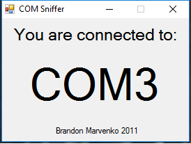

EENG 383
In Lab 5 - Color CubeRequirements
Working in teams of two, read through the following lab activity and perform all the actions prescribed. You do not need to document bullet items. Make a record of your response to numbered items and turn them in a single copy as your teams solution on Canvas using the instructions posted there. Include the names of both team members at the top of your solutions. Use complete English sentences when answering questions. If the answer to a question is a table or other piece of art (like an oscilloscope trace or a figure), then include a sentence explaining the piece of art. Only include your answers, do not include the question-text unless it is absolutely needed.Objective
The objective of this lab is to teach you how to create a terminal interface to your microcontroller.External Hardware
The firmware that you will be working today will allow you to manipulate the state of the LED using a terminal application running on a PC. We will focus here on the newest piece of hardware, the FT230 chip.FT230
The FT230 chip acts as a USB to serial bridge. This chips allows a microcontroller to use the RS232 communication protocol to a serial terminal application on a PC using a USB cable. This little piece of magic is accomplished using the FT230 chip and software residing on the PC as illustrate in the following figure.
Any character sent from the PIC on pin RC6, as a series of bits, is transformed into a USB signal by the FT230 chip, and decoded by a software driver residing on the PC into a series of bit sent over a COM port. You can configure a terminal application like PuTTY to decode the bits from a COM port into character printed in the terminal window on your PC. Similarly, character typed into the terminal (using your PC's keyboard) are sent to pin RC7 of the PIC.
When you plug your development board into a PC you may have noticed that your PC makes chime sound. This tells you that the PC has recognized the FT230 chip and assigned it a COM port. A PC may have any number of COM ports, so each is given a unique numerical value. There are a variety of different ways to determine the COM port assigned to your FT230 chip, but I find the easiest to run Brandon's COM port finder. There is also a link to this application on the class main page. Plug your development board into your PC and run this application. You should see something similar to the following; in this case my FT230 chip has been assigned COM3. Note that more than likely your PC will assign your FT230 a different port number. You will need the port number anytime you need to connect your PIC to a a terminal application like PuTTY.

Now that we know the identity of the COM port created to our PIC, let's start by looking at how ASCII character are represented as a series of bits using an oscilloscope. Start by launching PuTTY. Select Connection type = Serial in the initial pop-up screen - use COMx where "x" is the COM port number assigned to your FT230 chip. Adjust the default speed (adjusted through Category -> Connection -> Serial) 9600 baud (bits per second) - this step is not usually needed, but included just in case it is.
You do not need to program your PIC in order to perform the following experiment, just leave your lab 4 music player programmed on your board. Now setup the oscilloscope to view the bit stream coming from PuTTY into the PIC using the following setup:
| Ch1 probe | RC7 |
| Ch1 ground clip | Development board ground loop |
| Horizontal (scale) | 200 us |
| Ch1 (scale) | 1V |
| Trigger mode | Auto |
| Trigger source | 1 |
| Trigger slope | ↓ |
| Trigger level | 1.5V |
- Align Ch 1 on the third lowest reticule so as to leave room for the decoded serial character,
- Align the horizontal position at the second left-most reticule,
Again, type "5" in PuTTY and the bit stream of ASCII '5' sent from the PC to the PIC will stay on the oscilloscope. Note that the data bits are 0b00110101 when arranged from MSB (left-most bit) to LSB (right-most bit). This converts to 0x35 which is the ASCII code for the number 5. Note: The image below has CH1 aligned to the 2nd lowest reticule, it should be aligned to the 3rd lowest reticule.

Finally, let's get the oscilloscope to convert this stream of bits into an ASCII character using the following oscilloscope setup.
- Convert serial stream
[Serial] → Mode → UART/RS232
[Serial] → Serial → Serial 1: UART/RS232 ✓
[Serial] → Signals → Rx → 1
[Serial] → Signals → Threshold → (Trigger Level) → 1.65V
[Serial] → Bus Config → #Bits → 8
[Serial] → Bus Config → Parity → None
[Serial] → Bus Config → Baud Rate → Baud → 9600 b/s
[Serial] → Bus Config → Polarity → Idle high
[Serial] → Bus Config → Bit Order → LSB
[Serial] → settings → Base → ASCII
- Clear all menus off the bottom of the screen
[↑Back] - Screen shot the screen on USB:
[Save] → Save → Format → 24-bit Bit... (*.bmp) [Save] → Save → Press to Save
Try pressing different keys in PuTTY and observe the decoded stream on the oscilloscope. Try the arrow keys (you will need to change the time base to 1ms/division), delete, backspace. Some of characters are escaped so the terminal interprets them not as character to print, but rather as terminal control commands.
- Screen capture the '5' character on your oscilloscope and include it in your report. Make sure to show the serial decoding at the bottom of the screen.
-
Complete the following table for the character listed in the left most
column. Remember that every transmitted character has a start and
stop bit (do not include) and is transmitted LSB first.
- Fill in the "Bit period" column with the shortest bit period (in microseconds) duration for that character. To determine the bit period, find, and measure, the shortest logic "1" or logic "0" pulse. You can measure the duration of the pulse using the horizontal scale or by using the Cursor function activated by pressing the cursor button.
- Fill in the "Bit frequency" column with the reciprocal of the Bit period. Use units of bps (bits per seconds) instead of Hertz (cycles per second).
- Extract the 8-bit binary code from the data sent, making sure to ignore start and stop bits and ordering them from MSB (left) to LSB (right) and put it into the "Binary code for data" column,
- Convert the 8-bit binary code data into 2 hex characters and put the value in the "Hex code for data" column,
- Use an external resource to look-up the ASCII character for each of the Hex codes and put it into the "ASCII char for data" column.
Character sent Bit period (us) Bit frequency (bps) Binary code for data Hex code for data ASCII char for data bits 'a' 'A' <Enter> <Backspace>
Internal Subsystem
The Enhanced Universal Synchronous Asynchronous Receiver Transmitter (EUSART) subsystem of the PIC can be configured to send and receive ASCII characters to a terminal application on a PC. The configuration of the EUSART subsystem is described in the PIC18(L)F2X/4XK22 Data Sheet. The PIC has two EUSARTs denoted EUSART1 and EUSART2. When you encounter register and field name references in the Data Sheet that contain a lower-case "x", like TXREGx, you should substitute "1" or "2" for the "x" depending on which EUSART you are working with. On our development board, I have connected EUSART1 to the FT230 chip, so we will always substitute "1" for "x". Remember that a field is a named collection of bits within a register.- Using Table 2 on page 6 of the Data Sheet (for the 28-pin SSOP package), what I/O pins are associated with the EUSART1? Note, we are not using the EUSART2 subsystem nor its associated pins.
- The baud rate generator inside the PIC slows down the main oscillator
by dividing it by the value stored in the baud rate generator register
pair SPBRGH1:SPBRG1 to make the 9600 baud rate clock used to produce bits.
Note the ":" symbol separating the two register names means that we are
building a 16-bit value with SPBRGH1 as the upper 8-bits and SPBRG1 as
the lower bits.
The relationship between the main oscillator frequency (Fosc) and the
baud rate is given in Baud Rate Formula column of Table 16-3 in the
Microchips PIC18(L)F2X/4XK22 Data Sheet. The value n in the equation
(per the legend) is the SPBRGH1:SPBRG1 register pair and the answer to
this question.
The bit sequence observed in the previous section was asynchronous (SYNC = 0) because it was not accompanied by a clock. We will be using the high speed 16-bit baud rate generator (BRG16 = 1 and BRGH=1).
Determine the value for the 16-bit baud rate generator SPBRGH1:SPBRG1 to generate a 9600 baud rate assuming that the PIC is running at 64MHz. Show your work and state your 16-bit answer in hexadecimal. - Look at the Figures 16-1 and 16-2, what register would you write to in order to transmit (TX) a data byte out of the PIC? What register would you read in order to receive (RX) a data byte sent into the PIC? Note that these registers need to be connected to the data bus.
- Look at the Figures 16-1 and 16-2, what flag indicates when a data byte can be transmitted out of the PIC? What flag indicates that a data byte has been received by the PIC? Note that these flags are connected to the TX and RX register.
- Read about the TX1IF and RC1IF flag in the PIR1 register defined on page 112. How are each of these flags cleared?
Firmware Organization
Create a project for today's inLab code using the following steps.- Launch MPLab X
- Close any open project: File → Close All Projects
- Create a new inLab05 project as you did in Lab 4. Make sure, at step 2 (Select Device), to choose PICKit 3.
- Click Tools → Embedded → MPLab Code Configurator
- If the MPLab Code Configurator is not listed then you will need
to install the Code Configurator as follows:
- Tools → Plugins,
- In the Plugins pop-up select the "Available Plugins" tab,
- Check the "MPLab® Code Configurator" check box,
- Click Install,
- In the Plugin Installer pop-up, click Next,
- Accept the terms, click Install,
- Check the "Restart Now" radio button, click Finish,
- Wait for netBeans Platform to do its thing and then proceed,
- When MPLab launches, open the MPLab Code Configurator.
- In the Save MCC Configuration File pop-up, keep defaults and click Save,
- Click on "Clock Control" in the Project Resources section of the Resource
Management tab (left side of the screen). Then, in the Clock Control tab
- System Clock Select: FOSC
- Internal Clock: 16MHz_HFINTOSC
- Software PLL Enabled: ✓
- In the Device Resources section of the Resource Management tab, scroll down and expand the "Timer" list. Double click TMR0.
- In the Device Resources section of the Resource Management tab, scroll down and expand the "UART" list. Double click UART.
- In the Device Resources section of the Resource Management tab, scroll down and expand the "ECCP" list. Double click ECCP1.
- In the Device Resources section of the Resource Management tab, scroll down and expand the "Timer" list. Double click TMR2.
- In the Project Resources section of the the Resource Management tab, expand
the Drivers → Timer options if not already expanded, and click on TMR0.
Note □ means to leave the box unchecked. A ✓ means to check
the associated box.
- Timer Enable: ✓
- Timer Mode: 16-bit
- Clock Source: FOSC/4
- Prescaler Assignment: assigned
- Prescaler: 1:16
- TMR Interrupt Enable: □
- Generate TMR ISR: □
- In the Project Resources section of the the Resource Management tab, expand
the UART option and click on UART(None).
- UART PLIB Selector: EUSART1
- Requested Baudrate: 9600
- Data Size: 8
- Flow Control Mode: None
- Redirect Printf to UART: ✓
- Interrupt Driven: □
- In the Project Resources section of the the Resource Management tab,
click on TMR2.
- Timer Enable: ✓
- Prescaler: 1:16
- Postscaler: 1:1
- Requested Period: 64 us
- TMR Interrupt Enable: □
- Generate TMR ISR: □
- In the Project Resources section of the the Resource Management tab, expand
the ECCP option and click on ECCP1.
- TMR Dependency Selector: TMR2
- ECCP mode: Enhanced PWM
- Select Timer: Timer 2
- PWM Duty Cycle (%): 50
- Enhanced PWM Output Mode: single
- PWM pins polarity: P1A,P1C: active high; P1B,P1D active high
- Enable Steering: □
- Auto shutdown on: disabled
- PWM Delay Counts: 0
- File → Save All…
- Click on the "Generate" button in the Project Resources section of the Resource Management tab. You should note activity in the Output area of the console showing that the code configurator is creating files associated with your project. Anytime that you make a change to the configuration you must re-generate the supporting files by clicking on the generate button,
- Double click the file main.c to open it in the editor window.
- Replace the contents of main.c with
------------------------------ ?: Help menu o: k Z: Reset processor z: Clear the terminal t: Display current TMR2 T: Display current TMR0 p/P: decrease/increase duty cycle ------------------------------
Every terminal program that you write this term needs to have a help menu which tells the operator what commands they can issue and a brief description of what the commands can do. In some labs you will include some basic status information at the top of the help menu.
Z
While developing an embedded systems application it is useful to perform a software reset of the PIC. This reset will reveal the "splash screen", a welcome screen displayed at system start-up. I put some basic information on the splash screen including the wiring information. After downloading your program you will not see the splash-screen because your program has already started running and is waiting for terminal input. I would encourage you to include some ASCII art in your splash screen to customize your system - search "ASCII art generator".
z
Sometimes you just want all the garbage on the terminal screen to go away.
t/T
The value may appear random because the timer is counting up and rolling over so quickly.
p/P
I often use a upper and lower case letter for commands that decrease (lower case) or increase (upper case) some system value. In order to see the LED light-up make sure that you have a jumper wire connected between RC2 and an LED. Adjust the duty cycle to turn the LED off remembering that the RGB LED is active low.
Before moving on, let's examine some of the helper functions generated by MCC that you will need to use in your lab this week. In the project manager window expand Header Files → MCC Generated Files. Double click and open all the ".h" files in the subfolders of this folder that do not end in "_deprecated.h". Use the contents of the files to answer the following questions.
- Each function prototype has a comprehensive block of comments that precede each function prototype. Look through the "@brief" comments and identify the function that "Loads the 16-bit duty cycle value." List the associated function prototype.
- What register and field are used for the EUSART1_IsRxReady function? Note, this is in eusart1.c. You can open this quickly by holding CTRL and clicking on "EUSART1_IsRxReady" while inside eusart1.h.
- When writing a value to TMR0 using the TMR0_CounterSet function, what data-type should the input argument be?
- Look in tmr0.h. If you wanted to clear the TMR0 interrupt flag, which function would you use? Inside this function, how is the TMR0 interrupt flag cleared? Note, you can use the same CTRL+click trick from earlier.
- In the EUSART1_Initialize function (found in MCC Generated Files → uart → src → eusart1.c), what 16-bit value (in hex) is written to the baud rate generator registers SPBRGH1:SPBRG1? Compare this value to an earlier answer.
- What PIC data registers does the EUSART1_Read function get the incoming character from? Hint, it is the returned value. What PIC data registers does the EUSART1_Write function put the outgoing character to?
- What flag does EUSART1 check to see if Rx (recieve) is ready?
- What flags does EUSART1 check to see if Tx (transmit) is ready?
- List the invocation(s) of #defines contained in the MCC Generated Header Files that are present in the main.c file. Hint, these should be light blue.
- List all calls to functions contained in the MCC Generated Source Files that are present in the main.c file. Hint, these are usually functions that are black and not defined within the main.c file.
- Is there a format character to print a value in binary? If so what is it? Is there a format character to print a value in octal? If so what is it? Is there a format character to print a value in hexadecimal? If so what is it? What is the difference between using an upper or lower case "x" when printing values?
- For the RESET function on page 400, what library do you need to include in order to access this function? What MCC Generate header files (there are more than one), found in your project, contains the #include to this library?
Firmware Experiments
To answer the following question, add a bunch of printf statements to your program under the "f: print using several format specifiers." menu option. For each (format, value) pair in the following table, determine the output produced by printf on the terminal. For example to determine the output produced by the %u format with the value of 0xABCD you would put the following code in your program: printf("%u\r\n",0xABCD);. If the result is a non-printable character, put "non-character" in the corresponding space. In the row labeled "decimal" determine the unsigned decimal equivalent of each value, computed by you using the windows calculator program.- Complete the table using the output shown in the terminal.
format '0' 0x30 0xAB 0xABCD 0xABCD0123 %c unprintable %u 48 %d 291 %x 30 %04x abcd decimal 171 - As you discovered in the previous problem, printing out 32-bit values
is problematic. Problematic in the sense that it cannot be done. If you
need to print a 32-bit value you must print it as a pair of 16-bit values,
the upper 16-bits and then the lower 16-bits. To do this you will need to
use a shift operation to move the upper 16-bits (of the 32-bit variable)
into the lower 16-bits. Then you will need to mask off the lower 16-bits
(of the 32-bit variable).
uint32_t var32 = 0xABCD0123; // print var32>>16 in a single printf statement // print var32&0xFFFF in a single printf statement
Write a pair of printf statements that prints 8 hexadecimal characters of a 32-bit variable with "0x" in front of the 8 hexadecimal characters. You need to print leading zero's in each 4 hex character output using the "04" format specifier. Obviously, it would be a good idea to try out your idea in code.
I have not been able to get the following to work on our compiler. Having this capability would really simplify printing 32-bit integers. If you put #include <inttypes.h> at the top of your program (just below mcc_generated_file/mcc.h) then you can use the following to print 32-bit variables. printf("0x%08" PRIx32 "\r\n",var32); - Connect an oscilloscope to RC2 and determine the PWM resolution.
The PWM resolution is the time (in us) per duty cycle count.
To do this:
- Measure the time high of the PWM waveform,
- Note this initial duty cycle value,
- Change the duty cycle value, noting the new value,
- Measure the time high of the PWM waveform,
- Compute the difference of the times high,
- Compute the difference between the duty cycle values,
- Compute the ratio difference in times high over difference in duty cycle values.